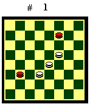
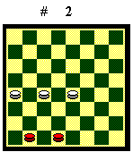
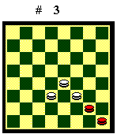

TRE DAME CONTRO DUE DAME
Il finale di tre dame contro due dame
è vinto dal Bianco, con l'eccezione di alcune posizioni particolari,
di cui do un esempio più sotto. Il Nero offre la maggiore resistenza
quando ha le dame unite e si rifugia nel biscacco o nel cantone. Se le
dame nere sono separate, l'unico caso in cui la manovra del Bianco non
è banale è quando sono negli opposti biscacchi.
Dame nere negli opposti biscacchi

Il Bianco deve formare una fila di tre dame lungo una delle due parallele, occupando le case 11-14-18 oppure 15-19-22. Deve scegliere l'una o l'altra parallela in modo che le dame nere abbiano la mossa sulle due dame bianche agli estremi della fila (in 11 e 18 oppure in 15 e 22).Diagramma 1. Il Bianco muove: la fila è sulla parallela giusta: le dame nere hanno la mossa sulle due dame bianche agli estremi delle fila: 1.19-14 7-4 2.15-12 21-25 * 3.22-18 4-8 * 4.12-7 8-4 (se 25-29,18-21 cambio forzato e Bv) 5.7-11 cambio forzato. Il Bianco vince.
Il Nero muove: la fila è sulla
parallela sbagliata: sono le due dame bianche agli estremi delle fila che
hanno la mossa sulle dame nere. Per invertire la mossa, il Bianco deve
formare la fila sull'altra parallela: 1.7-4 2.19-14 4-8 3.15-11 8-12 4.22-18
(la fila è sulla parallela giusta. Il Bianco vince con la stessa
manovra) 21-26 5.14-19 26-29 6.18-21 12-8 7.11-15 29-25 8.21-26 25-29 9.26-22
il Bianco vince.
Dame nere nel biscacco

Il Bianco deve assumere la posizione del Diagramma 2.Il Bianco muove: 1.18-22 30-26 2.17-13 26-30 (se 26-21, 19-14, 29-25, 13-17 Bv) 3.13-10 29-25 4.10-14 25-29 5.22-27 il Bianco vince.
Il Nero muove: 1.30-27 (se 29-25, 19-22 stessa manovra) 2.18-21 27-30 (se 29-25, 19-22 Bv) 3.19-22 29-25 4.21-26 il Bianco vince.
Si noti come le linee di gioco siano
diverse. Per capire in quale dei due casi ci si trova, si calcoli la mossa,
escludendo dal computo la dama in 17. Se la mossa è del Nero siamo
nel primo caso. Se la mossa è del Bianco, siamo nel secondo caso,
più semplice.
Dame nere nel cantone

Il Bianco deve assumere la posizione del Diagramma 3.Il Bianco muove: 1.22-26 28-24 2.19-22 24-28 3.26-29 il Bianco vince.
Il Nero muove: 1.28-31 2.22-26 31-28
3.19-22 il Bianco vince.
Posizioni di pari
 Riporto due esempi in cui il Bianco non riesce
a liberare le proprie dame legate a sponda e patta:
Riporto due esempi in cui il Bianco non riesce
a liberare le proprie dame legate a sponda e patta:
Diagramma 4. Il Nero muove: 1.14-10 2.2-5 18-14 ecc. Pari.

Diagramma 5. Il Nero muove:
1.15-11 2.7-3 14-10 3.2-5 11-14 4.3-7 10-6 5.5-9 6-10 6.9-5 10-6 ecc. Pari.